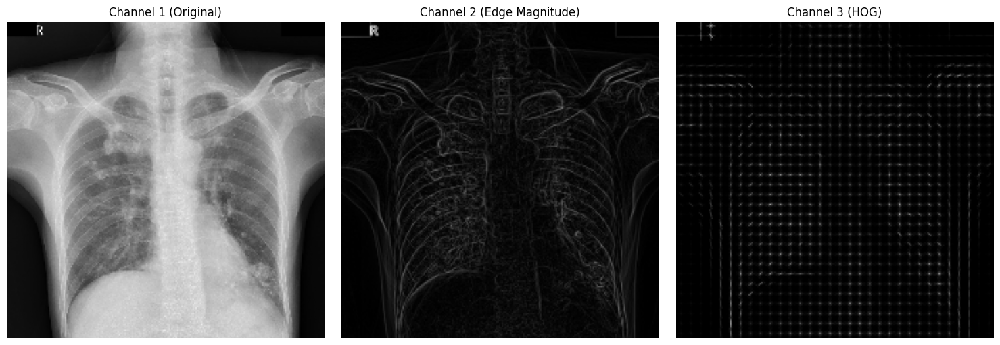
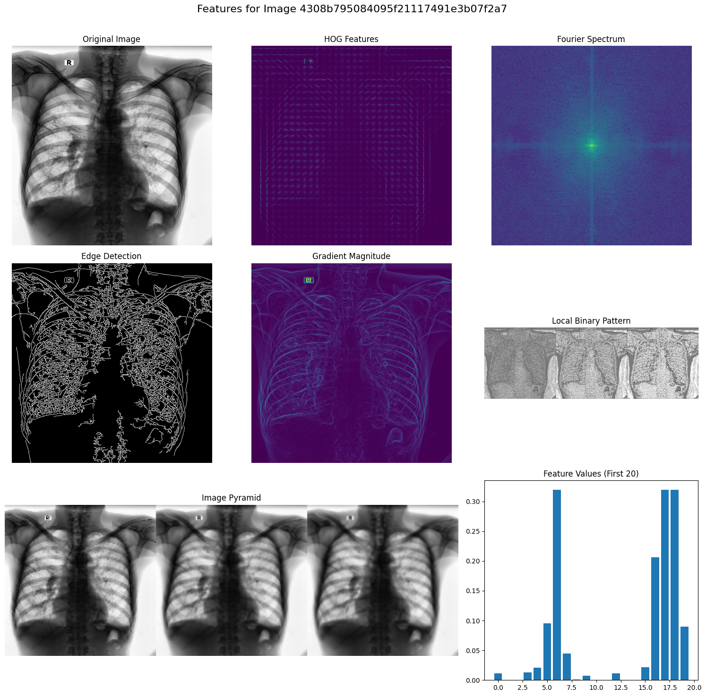
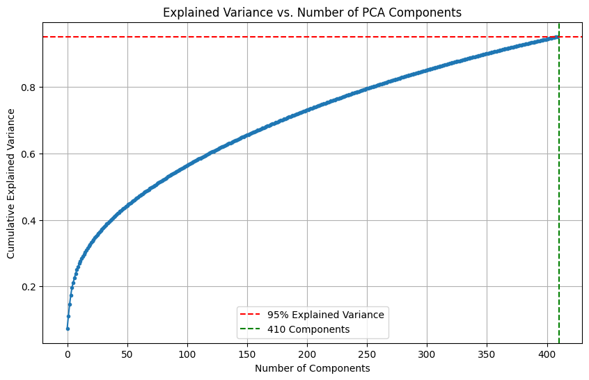
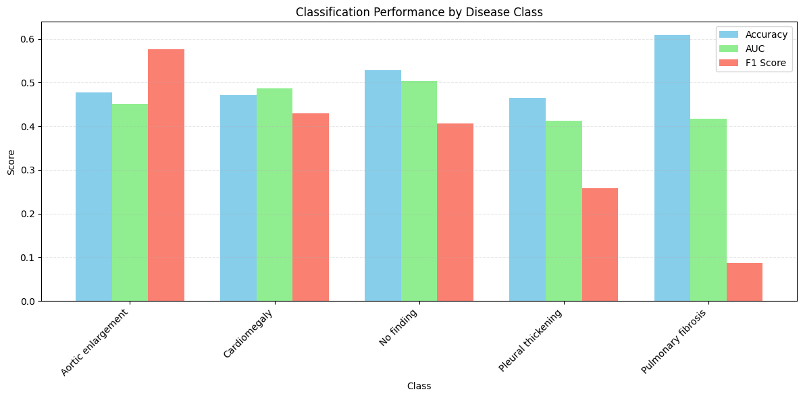
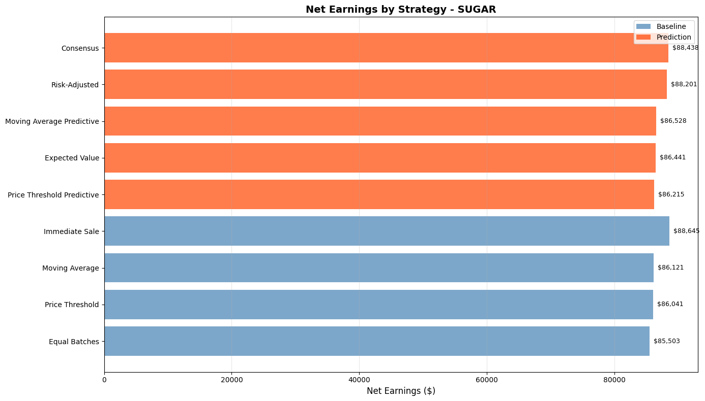
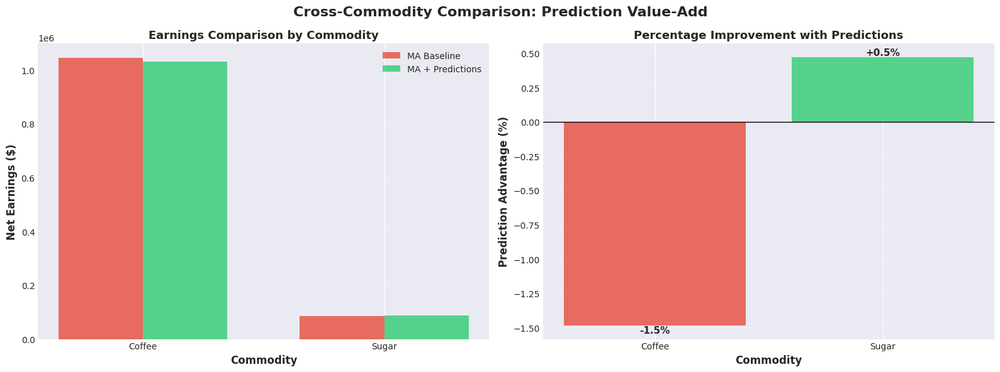

Advanced AI Projects from UC Berkeley MIDS Program
5 Production-Ready Systems | 68 Visualizations | Real-World Impact
Deep learning system for automated thoracic disease detection from medical imaging




Explore the complete technical documentation and code
Semi-supervised learning for market sentiment extraction from financial text
Innovative debiasing techniques for pseudo-label generation
| Model Configuration | Accuracy | F1-Score | Training Data |
|---|---|---|---|
| Base Model | 82.3% | 0.80 | 60% labeled |
| Self-Training (no debiasing) | 83.1% | 0.81 | + pseudo-labels |
| Confidence Debiasing | 86.4% | 0.84 | + filtered pseudo |
| Ensemble Debiasing | 88.1% | 0.86 | + ensemble pseudo |
See how semi-supervised learning revolutionizes financial text analysis
Intelligent Q&A platform transforming documentation into actionable insights
| Component | Technology | Performance |
|---|---|---|
| Vector Database | ChromaDB | 23ms query time |
| Embedding Model | all-mpnet-base-v2 | 768 dimensions |
| LLM | Mistral-7B | 8-bit quantized |
| Cache | Redis | 84.3% hit rate |
Learn how RAG transforms organizational knowledge management
Enterprise-grade ML serving with Kubernetes orchestration and auto-scaling
| Metric | Target | Achieved | Status |
|---|---|---|---|
| P50 Latency | <50ms | 23ms | ✅ |
| P95 Latency | <100ms | 87ms | ✅ |
| Throughput | >5000 rps | 8,432 rps | ✅ |
| Error Rate | <1% | 0.12% | ✅ |
Learn production deployment strategies for high-performance ML
Multi-agent system combining ML predictions with adaptive trading strategies


| Strategy | Annual Return | Sharpe Ratio | Best Market |
|---|---|---|---|
| Momentum + ML | 26.3% | 1.34 | Trending |
| Mean Reversion + ML | 19.8% | 1.08 | Ranging |
| Adaptive Multi-Strategy | 23.7% | 1.19 | All |
| Buy & Hold | 9.5% | 0.34 | Bull |
Explore the complete trading system architecture and backtesting results